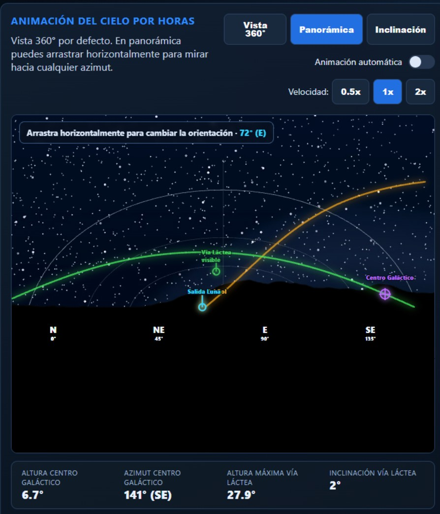
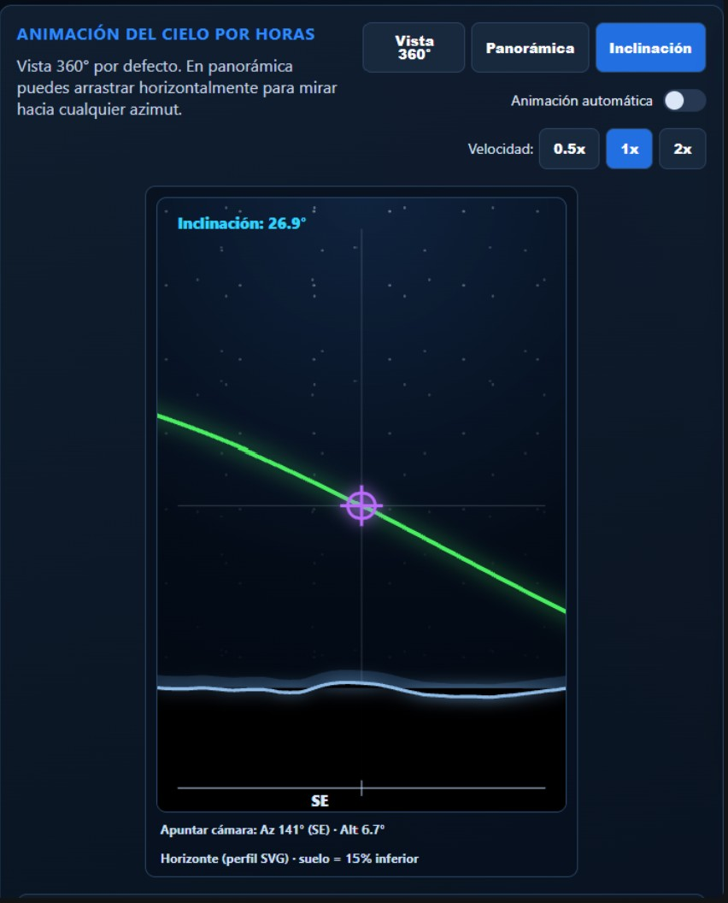
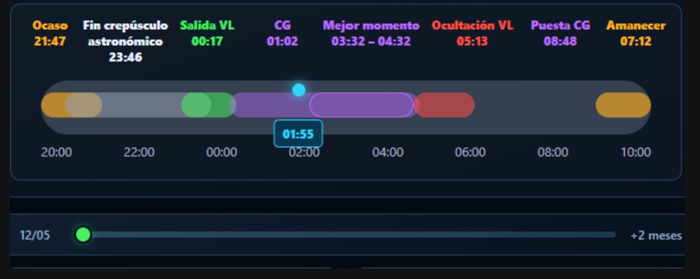
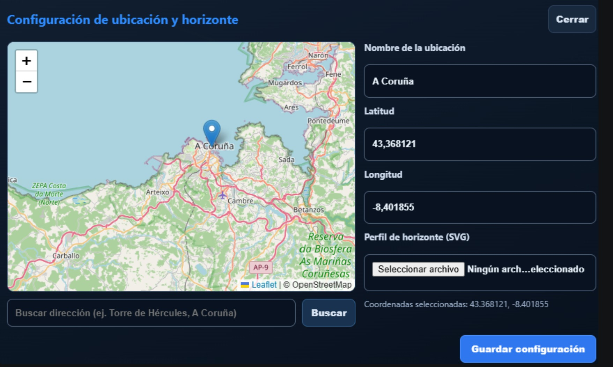
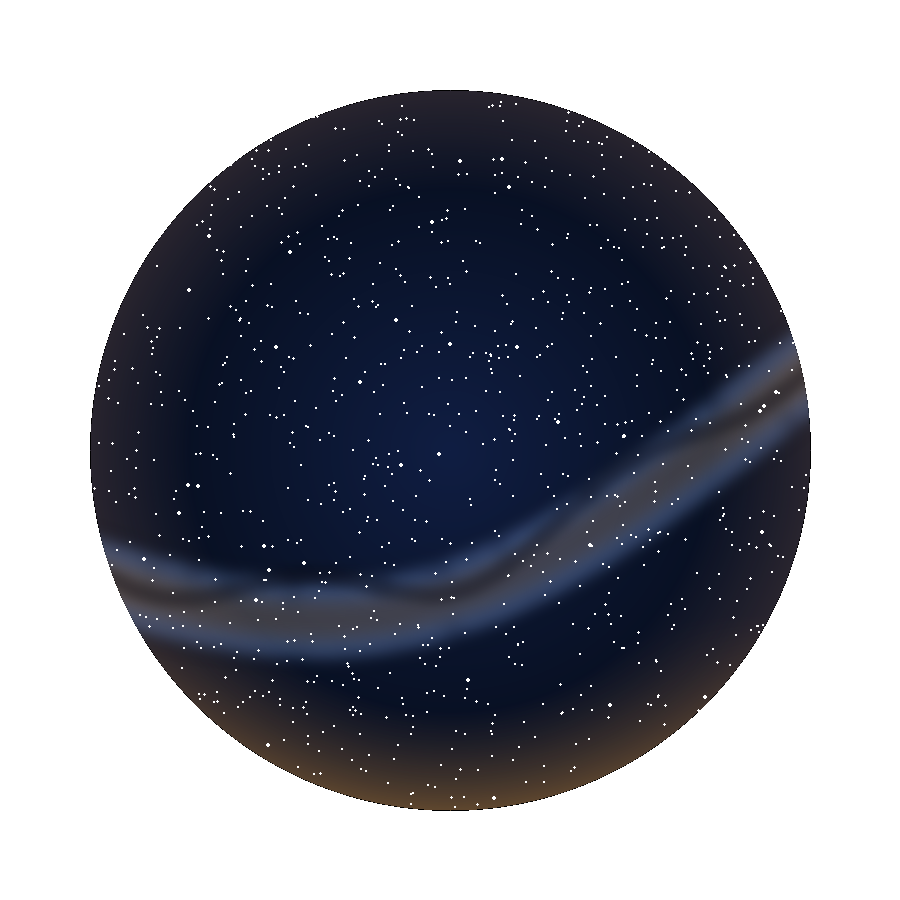
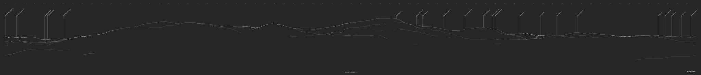

1. Inicio rapido
Selecciona la fecha en la cabecera (input, botones ← → o icono 📅) y pulsa Actualizar.
Ajusta la hora con el slider del timeline o activa la reproduccion automatica y cambia la velocidad.
Usa el selector de dia (debajo del timeline) para saltar entre fechas dentro del rango de +2 meses. El dia seleccionado aparece flotando sobre el slider.
Alterna entre Vista 360, Panoramica e Inclinacion con los botones superiores de la card de simulacion.
Consulta el panel de datos (debajo de las vistas) para ver en tiempo real la altura y azimut del Centro Galactico y la Via Lactea.
Activa capas y busca objetos celestes en la columna derecha para centrar la sesion en tu objetivo.
Abre la Configuracion (icono ⚙️ en la cabecera) para fijar ubicacion, guardar favoritas y cargar perfil SVG de horizonte.
2. Resumen de interfaz
La pantalla principal se divide en tres areas:
- Cabecera superior: nombre de ubicacion, selector de fecha, botones de dia anterior/siguiente, boton Actualizar, icono de Manual (📖) e icono de Configuracion (⚙️).
- Columna izquierda: resumen de tiempos astronomicos (salida/puesta Sol, Luna, Via Lactea, Centro Galactico), informacion de calculos y leyenda de colores.
- Zona central: visor del cielo (Vista 360, Panoramica e Inclinacion), panel de datos astronomicos, timeline horario y selector de dia.
- Columna derecha: condiciones meteorologicas actuales y prevision compacta, capas de objetos celestes y buscador.
3. Vistas del cielo
- Vista 360: cielo circular completo para orientacion global. Muestra posicion del Sol, Luna, Via Lactea, Centro Galactico y objetos celestes por azimut. Arrastrable para rotar. Soporta capa de satelite (toggle + zoom + Ctrl+drag).
- Panoramica: vista horizontal arrastrable, orientada mirando al Sur (izquierda = E/SE, centro = S, derecha = SO/O). Util para planificar encuadres fotograficos. Incluye selector de focal simulada (n/a, 16mm, 35mm, 50mm).
- Inclinacion: estimacion vertical de la Via Lactea con referencia del Centro Galactico. Muestra la inclinacion aparente del arco en encuadre 3:2. Incluye selector de focal simulada.
Debajo de las tres vistas hay un panel de datos compartido con Altura y Azimut del Centro Galactico, altura maxima de la Via Lactea e inclinacion, actualizados segun la hora seleccionada.
4. Timeline y selector de dia
La barra temporal representa la noche de ocaso a amanecer e incluye hitos codificados por color:
- ■ Ocaso / Amanecer
- ■ Crepusculo astronomico (noche oscura)
- ■ Salida de la Via Lactea
- ■ Ventana del Centro Galactico
- ■ Ocultacion de la Via Lactea
Haz clic en cualquier etiqueta del timeline para saltar directamente a ese momento.
El selector de dia (debajo del timeline) permite moverse entre fechas sin recargar: muestra el dia actual a la izquierda y +2 meses a la derecha. Al arrastrar el thumb aparece flotando la fecha seleccionada; al soltar, se navega a esa fecha.
5. Meteorologia y capas de objetos
Condiciones actuales (columna derecha, encima de Capas): muestra temperatura, humedad, viento, estado del cielo y cobertura de nubes en tiempo real para la ubicacion configurada. Debajo aparecen subcards de prevision para +6h, +12h, +24h y +72h, cada una con:
- Fila 1 (negrita): etiqueta de offset, fecha y hora (ej. +6h 14/05 04:00).
- Fila 2: temperatura 🌡️, humedad 💧, viento 💨.
- Fila 3: estado del cielo 🌤️ y cobertura de nubes ☁️.
Capas de objetos celestes:
- Planetas, constelaciones y deep-sky pueden activarse por separado.
- El buscador filtra objetos por nombre o categoria (ej. M31, Venus, Orion).
- Al seleccionar un objeto, se resalta en el mapa y muestra su informacion de altitud/azimut.
6. Configuracion de ubicacion
Accede desde el icono ⚙️ de la cabecera. El modal incluye:
- Nombre de ubicacion: etiqueta mostrada en cabecera y paneles.
- Favoritas: guarda la ubicacion actual (con perfil SVG si lo has cargado) y recuperala desde el desplegable en futuras sesiones.
- Mapa interactivo: haz clic para fijar coordenadas GPS, o usa el buscador de direccion para geocodificar automaticamente.
- Perfil SVG: carga un horizonte personalizado exportado desde PeakFinder u otra herramienta compatible. Importante: en PeakFinder selecciona el modo Silueta al exportar el SVG, no el modo Contorno. El fichero de silueta es compacto (~80-130 KB); el de contorno puede superar 2 MB y sera rechazado por el servidor.
- Visibilidad de capas graficas: activa o desactiva marcadores de Sol, Luna, Via Lactea, Centro Galactico, arco solar y controles de animacion.
Al guardar, la configuracion queda persistida en config.json en el servidor.
7. Capturas y recursos visuales
Estas son las capturas de referencia del sistema. Se muestran automaticamente desde la carpeta capturas/.
Vista Panoramica

Vista Inclinacion

Timeline y selector de dia

Modal de Configuracion

Fondo panoramico base

Perfil de horizonte SVG (ejemplo)

Si alguna imagen no aparece, revisa que exista en la carpeta capturas con el nombre exacto indicado.